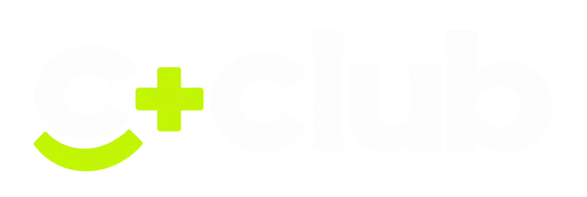

Высокий пинг
Проверяем сеть и интернет. Если причина у провайдера, передаём диагностику и сопровождаем обращение до решения.

ВойтиОбслуживаем технику и делаем работу прозрачной.
От первого обращения до фото результата —
всё в вашем кабинете C+club.
Одна команда — от обновления игры
до поиска причины микрофризов.
Проверяем сеть и интернет. Если причина у провайдера, передаём диагностику и сопровождаем обращение до решения.
Обновляем игры и лаунчеры на сервере, FACEIT через Super Client. Проверяем, что игры запускаются после изменений.
Обслуживаем CCBoot, iCafeCloud и iCafeMenu, обновляем драйверы NVIDIA и образы Windows в согласованное время.
Находим причины рывков изображения и задержек управления. Настраиваем систему и игры, проверяем результат тестами.
Тестируем наушники, клавиатуры и мыши. Проверяем кабели и разъёмы, устраняем неисправности или согласуем замену.
Проверяем температуры, серверные диски и резервные копии при обслуживании. Очищаем ненужный кеш, обновляем совместимые прошивки по необходимости.
Вы создаёте заявку с привязкой к ПК или сообщаете о сбое команде. Выясняем причину и приоритет.
Работаем удалённо или на месте. Платные работы и изменения согласуем заранее.
Проверяем работу техники, фиксируем исправления и объясняем, что было сделано.
Осмотр ПК, сервера, сети и тестирование периферии.
Аудит всех ПК и глубокая чистка запылённых компьютеров. Входит в обслуживание.
Базовая стоимость за клуб + ставка за каждый компьютер.
Окончательную стоимость и объём работ фиксируем в договоре.
$100 за клуб + $4 за ПК
$150 за клуб + $6 за ПК
Под конкретный объём работ
Цены в USD приведены для предварительного расчёта. Комплектующие, расходники, лицензии, сложный ремонт и работы сверх тарифа оплачиваются отдельно.
Наша команда монтажников аккуратно проложит кабели, организует кабель-менеджмент и настроит сеть под ваш клуб. Подключим новые компьютеры, проверим стабильность и проведём тесты в играх.
Полный перечень услуг · PDFЛичный кабинет C+club объединяет заявки, оборудование и отчёты. Видно, что произошло, кто занимается вопросом и какой результат получен.
Войти в кабинет →Доступ выдаёт команда после подключения клуба. Данные iCafeCloud доступны при настроенной интеграции.
Расскажите о клубе. Обсудим технику, задачи и подходящий формат обслуживания.
Без автоматического списания и обязательств. Отправка формы — запрос на обсуждение, не заключение договора.
Для инцидента на клиентском ПК — до 2 часов. Для согласованных плановых крупных работ — до 24 часов. Приоритет, начало отсчёта и часы действия сроков фиксируются в договоре.
Мы проверяем подключение и сеть клуба, собираем результаты диагностики и сопровождаем обращение к провайдеру. Срок устранения внешнего сбоя зависит от провайдера; мы сообщаем о ходе решения.
Наш специалист проверит деталь. Если нужен электронщик, согласуем ремонт и отвезём её профильному мастеру. Стоимость и сроки согласуются отдельно — двухчасовой срок на такой ремонт не распространяется.
Каждые шесть месяцев проводим аудит и диагностику всех ПК. Запылённые компьютеры проходят глубокую чистку и профилактику. Работа включена в обслуживание, комплектующие и расходники оплачиваются отдельно.